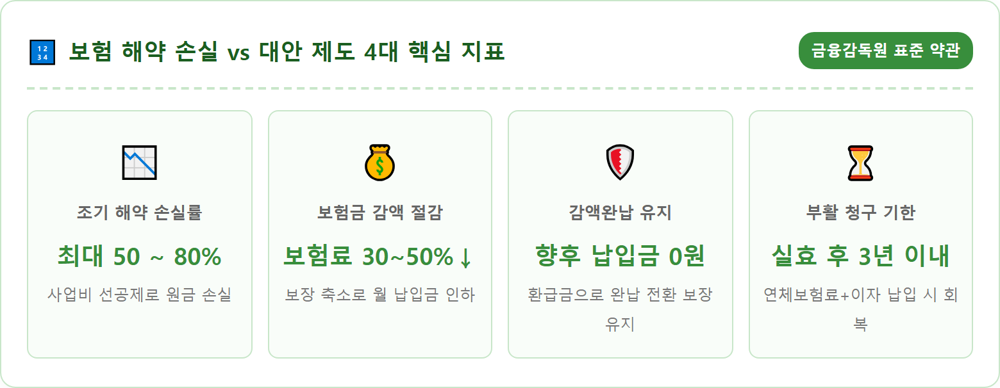
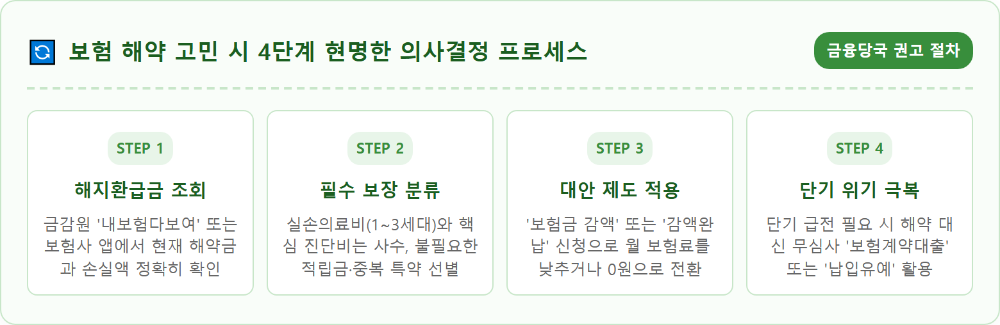
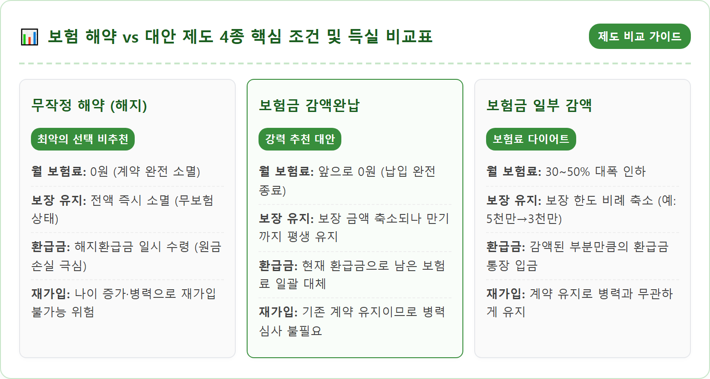
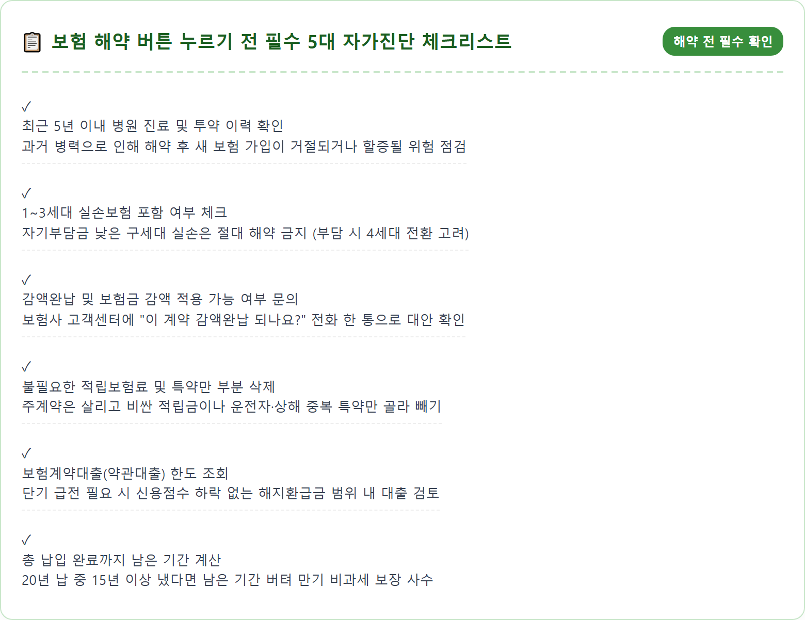
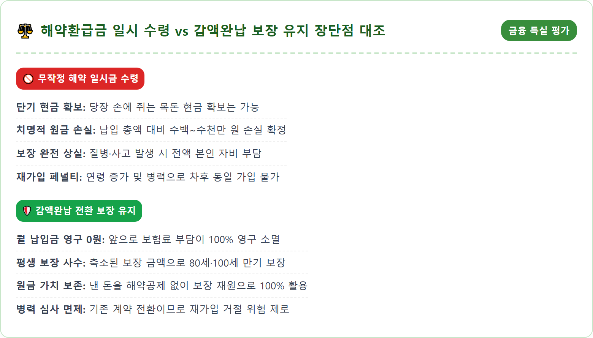
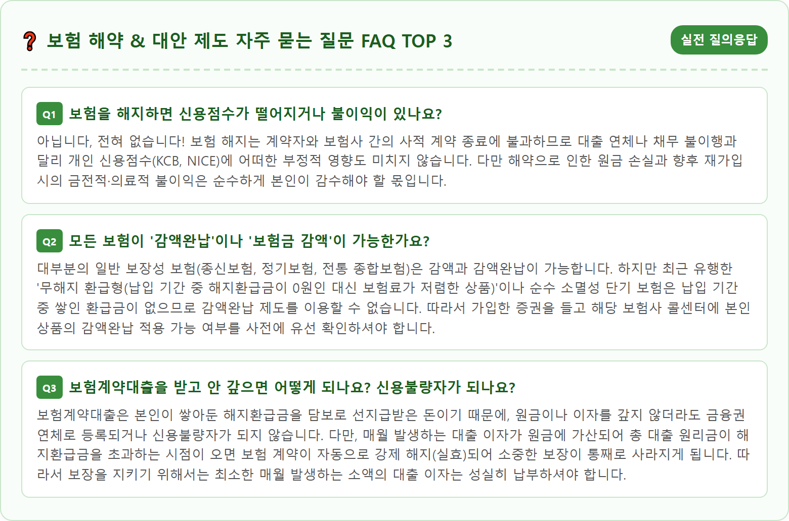

A thoughtful adult reviewing Korean life and health insurance policy documents at a tidy home desk with a tablet computer displaying official insurance management portals and surrender value calculators. A warm desk lamp illuminates the organized papers, showing insurance contract summaries, premium reduction options, and legal financial terms in neat Korean print. On the desk are a clean calculator, a pen, and a warm ceramic mug. Realistic indoor lighting, photorealistic, 8k resolution, crisp detail, calm and analytical financial planning mood.

고물가와 경기 침체, 금리 상승으로 인해 가계의 실질 소득이 줄어들면 매달 통장에서 꼬박꼬박 빠져나가는 보험료가 가장 먼저 눈엣가시처럼 느껴지기 마련입니다. "당장 쓸 돈도 부족한데 몇만 원, 몇십만 원씩 나가는 보험을 일단 깨서 급한 불부터 끄자"는 생각으로 무작정 보험 해지 버튼을 누르는 가정이 크게 늘고 있습니다. 하지만 금융 전문가들은 입을 모아 **"가계 지출 구조조정에서 보험 해지는 가장 마지막에 고려해야 할 최후의 수단"**이라고 경고합니다.
섣부른 보험 해지가 불러오는 첫 번째 치명적 위험은 **'막대한 원금 손실'**입니다. 은행 적금은 중도에 해지하더라도 원금은 100% 보존되지만, 보험은 저축이 아닌 보장성 금융 상품이기 때문에 납입 기간 초중반에 해약할 경우 기납입 보험료의 절반조차 건지지 못하는 일이 다반사입니다.
두 번째 위험은 **'향후 재가입 불가 또는 보험료 폭등'**입니다. 보험은 나이가 들수록 발병 위험률이 높아져 보험료가 가파르게 상승합니다. 게다가 과거 보험에 가입한 이후 병원 치료를 받았거나 고혈압, 당뇨, 고지혈증 등 만성질환 진단을 받았다면, 나중에 형편이 나아져 다시 가입하려 해도 인수가 거절되거나 부담보(해당 부위 보장 제외), 할증 보험료가 붙어 과거와 같은 혜택을 영영 누릴 수 없게 됩니다.
세 번째는 **'의료비 보장 공백으로 인한 가계 파탄의 위험'**입니다. 보험을 해지한 직후 갑작스러운 중대 질병이나 불의의 사고가 발생하면, 수천만 원에 달하는 치료비와 간병비를 오롯이 가계의 생돈으로 감당해야 하므로 가계 경제가 한순간에 벼랑 끝으로 내몰리게 됩니다.
보험 가입자들이 해약 창구에서 가장 크게 분통을 터뜨리는 부분이 바로 "내가 5년 동안 1,000만 원을 냈는데 왜 해지환급금이 400만 원밖에 안 되느냐"는 의문입니다. 이를 이해하기 위해서는 보험사의 복잡한 **'보험료 구조와 사업비 체계'**를 반드시 알아야 합니다.
우리가 매달 납입하는 보험료는 100% 저축되는 것이 아니라 크게 세 가지 항목으로 쪼개집니다:
1. 위험보험료: 사망, 암, 질병 등 사고 발생 시 보험금을 지급하기 위해 떼어두는 순수 보장 비용 (소멸성)
2. 부가보험료 (사업비): 설계사 수당, 광고 마케팅비, 보험사 전산 및 운영비 등 계약 초기 5~7년에 집중적으로 차감되는 비용
3. 순수 적립보험료: 위험보험료와 부가보험료를 뺀 나머지 금액으로, 만기환급금이나 해지환급금의 재원이 되는 적립금
특히 국내 대부분의 보장성 보험은 계약 초기에 대규모 신계약비(사업비)를 집중적으로 공제하는 '선지급 방식'을 채택하고 있습니다. 따라서 가입 후 1~3년 이내에는 적립된 돈의 거의 전부가 사업비로 빠져나가 해지환급금이 0원이거나 10~20% 수준에 불과합니다. 10년 이상 장기 납입해야 간신히 원금 근처에 도달하는 구조이므로, 조기 해약은 본인이 피땀 흘려 번 돈을 보험사에 거저 헌납하는 것과 다름없다는 진실을 명확히 인식해야 합니다.

감정에 치우쳐 성급하게 결정을 내리기 전에, 내가 가진 보험을 지금 해지하면 정확히 얼마를 손해 보는지 객관적인 수치로 확인하는 작업이 선행되어야 합니다. 정부와 금융감독원이 운영하는 공공 포털을 이용하면 본인이 가입한 전 생명보험사 및 손해보험사의 계약을 한눈에 조회할 수 있습니다.
가장 대표적인 경로는 금융감독원의 금융소비자 정보포털 **'파인(Fine - fine.fss.or.kr)'**의 **'내보험다보여'** 서비스입니다. 공동인증서나 간편인증(카카오, 네이버, 패스 등)으로 본인 확인을 마치면, 내가 계약자나 피보험자로 되어 있는 모든 유효 계약의 월 보험료, 보장 내역, 담당 설계사 정보가 실시간으로 일괄 조회됩니다.
구체적인 해지환급금 및 환급률을 확인하려면 해당 보험사의 공식 모바일 앱(또는 고객센터 웹사이트)에 로그인하여 **[MY페이지 → 계약관리 → 해약/해지환급금 조회]** 메뉴로 들어갑니다. 이곳에서는 오늘 날짜 기준으로 계약을 해지할 경우 계좌로 입금되는 실수령액, 기납입 총액, 차감되는 해약공제액, 환급률(%)이 투명하게 명시됩니다. 해약 시 날아가게 되는 수천만 원의 보장 내역과 원금 손실액을 숫자로 직접 확인하고 나면, 홧김에 해약 버튼을 누르는 충동을 멈추고 냉정하게 대안을 모색할 수 있게 됩니다.
가계 구조조정을 위해 보험을 정리하더라도 절대로 건드려서는 안 되는 **'철벽 방어선'**이 존재합니다. 지금 해약하면 다시는 이 지구상에서 가입할 수 없는 '과거 황금 조건'의 보험들입니다.
첫 번째는 **'1세대(구실손) 및 2세대, 3세대 실손의료보험'**입니다. 2009년 9월 이전 가입한 1세대 실손은 자기부담금이 0%이거나 5,000원에 불과하며 입원의료비를 100% 전액 보장합니다. 2017년 3월까지 판매된 2세대 실손 역시 자기부담금이 10~20%로 매우 낮습니다. 현재 판매 중인 4세대 실손보험은 비급여 항목 청구 시 보험료가 최대 300% 할증되고 자기부담금이 급여 20%, 비급여 30%로 높아졌습니다. 구세대 실손보험료가 비싸서 부담된다면 해지하는 것이 아니라 '4세대 전환' 제도를 이용하면 기존 병력 심사 없이 월 보험료를 50~70% 낮추면서 실손을 유지할 수 있으므로 절대 해약해서는 안 됩니다.
두 번째는 **'예전에 가입해 둔 암, 뇌혈관, 허혈성 심장질환 등 3대 질병 비갱신형 진단비'**입니다. 과거에 가입한 비갱신형 상품은 가입 당시의 젊은 연령과 저렴한 위험률이 적용되어 있어 가성비가 매우 뛰어납니다. 특히 납입 기간(예: 20년 납 100세 만기) 중 이미 10년 이상 납입하여 완납을 눈앞에 두고 있다면, 남은 몇 년만 버티면 100세까지 평생 보험료 한 푼 안 내고 보장받을 수 있는 소중한 자산이 되므로 어떤 일이 있어도 지켜내야 합니다.

매달 내는 보험료가 너무 부담스러울 때 가장 직관적이면서도 안전한 해결책은 바로 **'보험금 감액(減額)제도'**를 활용하는 것입니다. 보험금 감액이란 기존에 가입한 보험의 보장 금액(가입금액)을 줄임으로써 그에 비례하여 매월 납입하는 보험료를 낮추는 제도입니다.
예를 들어 사망보험금 1억 원에 월 보험료 20만 원을 내고 있던 종신보험이 있다면, 사망보험금을 5,000만 원으로 절반 감액 신청할 수 있습니다. 이렇게 하면 앞으로 내야 할 월 보험료 역시 10만 원으로 절반 뚝 떨어져 가계의 고정비 부담이 즉시 50% 줄어듭니다.
더욱 매력적인 점은 **'감액된 부분은 해약된 것으로 보아 그에 해당하는 해지환급금을 현금으로 돌려받을 수 있다'**는 사실입니다. 위의 예시에서 5,000만 원어치 감액분에 해당하는 해지환급금이 발생하면 그 돈은 계약자의 통장으로 즉시 입금됩니다. 즉, 당장 필요한 비상금도 일부 확보하고 매달 나가는 보험료도 절반으로 줄이면서 기존 보험의 알짜배기 보장은 그대로 유지할 수 있는 일석이조의 제도입니다. 고객센터에 전화하거나 모바일 앱에서 '보험금 감액 신청'을 하면 며칠 내로 손쉽게 처리됩니다.
"이제 앞으로 이 보험에 단 1원도 보험료를 낼 여력이 전혀 없다, 하지만 그동안 낸 돈이 아깝고 보장은 계속 받고 싶다"고 하시는 분들에게 최고의 구원투수가 되는 제도가 바로 **'감액완납(減額完納)제도'**입니다.
감액완납이란 현재 시점까지 쌓여 있는 내 **'해지환급금'을 앞으로 낼 보험료의 일시납 재원으로 사용하여, 앞으로 낼 보험료를 '0원'으로 만들고 납입을 그 자리에서 즉시 완료(완납) 처리**하는 파격적인 제도입니다. 보험료 납입은 그날로 완전히 끝나지만, 계약 자체가 만기까지 그대로 살아남아 보장이 유지됩니다.
물론 앞으로 낼 보험료를 기존 환급금으로 퉁치는 구조이므로, 원래 약정했던 보장 금액(예: 암 진단비 5,000만 원)은 일정 비율(예: 2,500만 원)로 축소 조정됩니다. 하지만 해약환급금을 푼돈으로 받고 계약을 날려버리는 것과 비교하면, 앞으로 보험료를 단 1원도 내지 않으면서 만기(80세, 100세)까지 2,500만 원의 암 보장을 공짜로 유지할 수 있으므로 경제적 가치가 비교할 수 없을 정도로 큽니다. 종신보험이나 정기보험, 무해지 상품이 아닌 표준형 보장성 보험에 가입한 지 7~10년 이상 지나 충분한 환급금이 쌓여 있는 계약이라면 감액완납을 적극적으로 검토해야 합니다.

가계의 자금난이 영구적인 것이 아니라 2~3개월간의 일시적인 실직이나 사업 자금 경색 때문이라면, 영구적인 제도 변경 대신 임시 방편 제도를 활용하는 것이 정답입니다.
첫 번째는 **'보험료 납입유예(일시중지) 제도'**입니다. 유니버설 기능이 있는 유니버설 종신보험이나 연금보험의 경우, 일정 기간(보통 가입 2년 경과 후) 동안 보험료를 내지 않고 쉬어갈 수 있습니다. 그동안 쌓아둔 해지환급금(의무적립금)에서 매월 위험보험료와 사업비가 자동으로 차감되면서 보장은 그대로 유지됩니다. 보통 1회 신청 시 1~2년간 납입을 유예할 수 있어 가계 경제가 회복될 때까지 시간을 벌 수 있습니다.
두 번째는 **'보험계약대출(약관대출)'**입니다. 내가 낸 돈으로 쌓인 해지환급금의 50~95% 범위 내에서 즉시 대출을 받는 제도입니다. 보험계약대출의 최대 장점은 신용평가 심사가 전혀 없고, 대출을 받더라도 **개인 신용점수에 단 1점의 영향도 미치지 않으며 금융권 대출 규제(DSR)에도 포함되지 않는다**는 점입니다. 은행 대출이 막혔을 때 앱에서 클릭 몇 번으로 1분 만에 내 통장으로 입금되며, 중도상환수수료가 없어 급한 불을 끄고 여유 자금이 생기면 언제든 수수료 없이 원금을 갚을 수 있습니다. 단, 약관대출 이자를 장기간 연체하면 환급금이 차감되어 보험이 실효될 수 있으므로 단기 급전용으로만 현명하게 활용해야 합니다.
많은 분들이 잘 모르고 있는 유용한 팁 중 하나는 보험 전체를 통째로 깰 필요 없이 **'불필요한 특약만 쏙 골라 부분 해지(특약 삭제)'**할 수 있다는 사실입니다. 우리가 가입한 종합건강보험 증권을 자세히 뜯어보면, 알짜배기 주계약 외에 설계사의 권유로 덕지덕지 붙어 있는 수십 개의 특약들이 보험료를 갉아먹고 있는 경우가 많습니다.
대표적으로 정리가 가능한 특약들은 다음과 같습니다:
- 적립보험료: 보장과 무관하게 보험사가 환급금을 준다며 강제로 끼워 넣은 금액으로, '적립보험료 최소화(0원 또는 기본값)' 신청을 하면 월 보험료가 수만 원 즉시 줄어듭니다.
- 중복 가입된 특약: 다른 운전자보험이나 자동차보험에 이미 들어가 있는 '교통사고처리지원금', '벌금', '변호사선임비용' 특약 중복분 정리
- 가성비 떨어지는 특약: 보장 범위가 극히 좁은 골절진단비, 깁스치료비, 맹장수술비, 강력범죄피해보장 등 납입 대비 실효성이 떨어지는 소액 특약 삭제
이처럼 암·뇌·심혈관 핵심 진단비와 수술비 등 뼈대가 되는 주계약은 그대로 남겨두고, 군살이 되는 자잘한 특약 5~10개만 콜센터에 전화해 부분 삭제하면 월 보험료를 30~40% 이상 가볍게 다이어트할 수 있습니다.

만약 보험료를 내지 못해 보험이 이미 실효(효력 정지)되었거나 섣부르게 해지한 후 뒤늦게 땅을 치고 후회하고 있다면, 마지막으로 법이 보장하는 **'보험계약 부활(효력회복) 청구권'**을 활용할 수 있습니다.
상법 제650조 및 표준 약관에 따르면, 보험료 미납으로 계약이 실효된 날로부터 **3년 이내**라면 계약자는 언제든지 보험사에 계약의 부활을 청구할 수 있습니다. 단, 여기에는 두 가지 엄격한 필수 조건이 따릅니다:
1. 해지환급금을 수령하지 않았을 것: 실효 상태에서 해지환급금을 통장으로 이미 찾아갔다면 부활이 불가능합니다 (단, 일부 특약 상품의 경우 환급금 반환을 조건으로 부활을 허용하는 경우도 있으므로 보험사 확인 필수).
2. 연체된 보험료와 약정 이자를 전액 납입할 것: 밀린 개월 수만큼의 보험료 원금과 그동안의 연체이자(보통 정기예금 이율 수준)를 일시에 납입해야 합니다.
가장 주의해야 할 점은 부활 신청 시 **'신규 가입과 똑같은 알릴 의무(계약 전 알릴의무)'**가 다시 적용된다는 사실입니다. 실효되어 있던 기간 동안 병원에 입원했거나 수술, 암 등 중대 질병 진단을 받았다면 보험사가 부활 청구를 거절하거나 해당 질병을 보장에서 제외할 수 있습니다. 따라서 보험이 실효된 상태라면 하루라도 빨리 건강할 때 밀린 보험료를 정산하고 부활을 신청하는 것이 소중한 내 보험을 온전히 되살리는 유일한 골든타임입니다.
